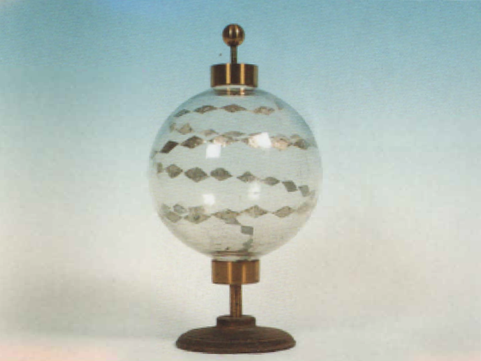

Globo scintillante
Scuola di provenienza: Istituto Agrario "F. De Sanctis", Avellino
Settore: Elettrostatica
Costruttori: Sconosciuto
Materiali: Vetro, losanghe di stagnola
Accessori: Nessuno
Stato di conservazione: Buono, ma non funziona
Descrizione: È un globo nel quale è stata applicata una serie di foglioline di stagnola tagliate a forma romboidale e disposte ad elica lungo la sua superficie, in modo da lasciare tra loro una piccola interruzione. All’estremità ci sono due viere di ottone che comunicano con i due capi dell’elica. Se si fa toccare l’estremità superiore ad una macchina elettrostatica nascono delle scintille, ad ogni interruzione delle foglioline di stagnola che producono una striscia luminosa.